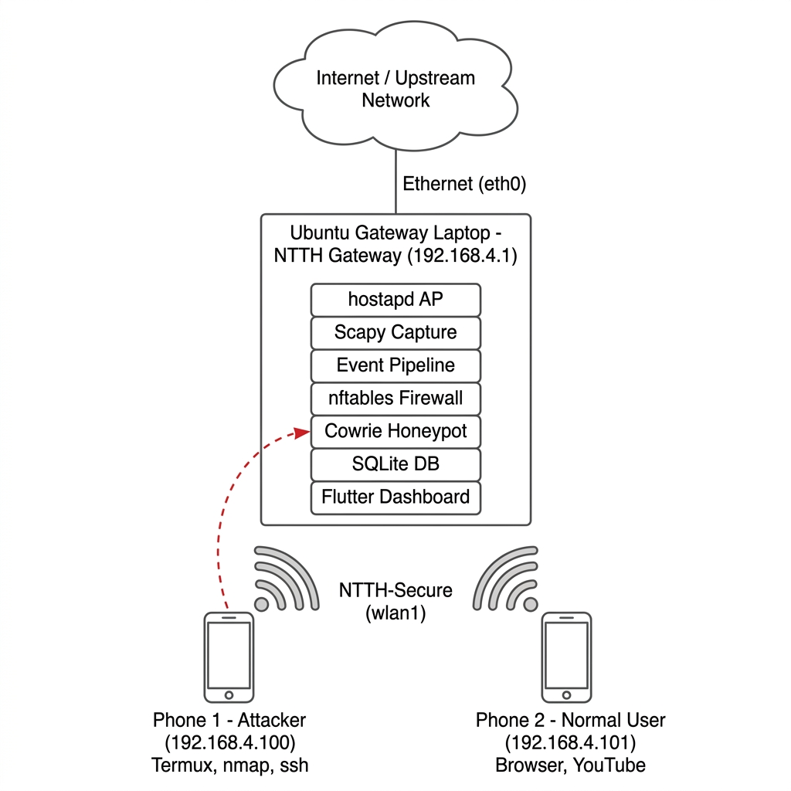
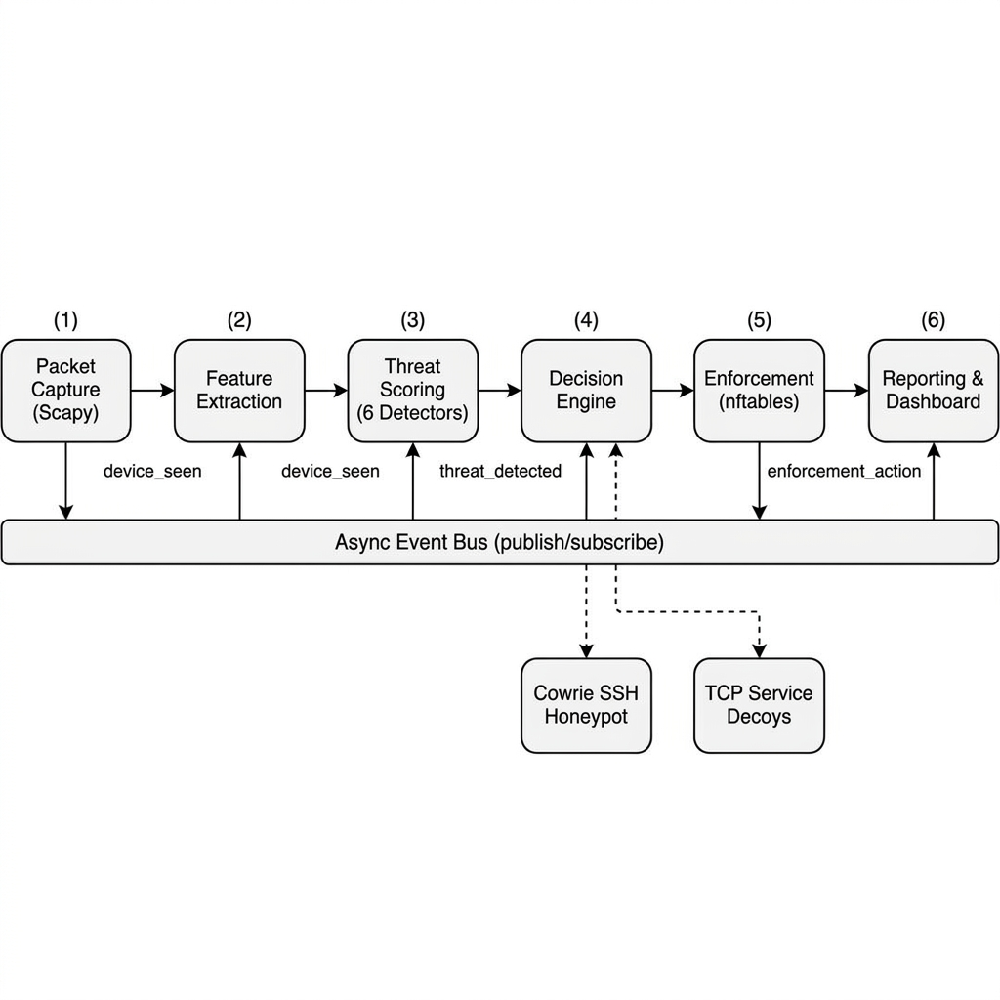
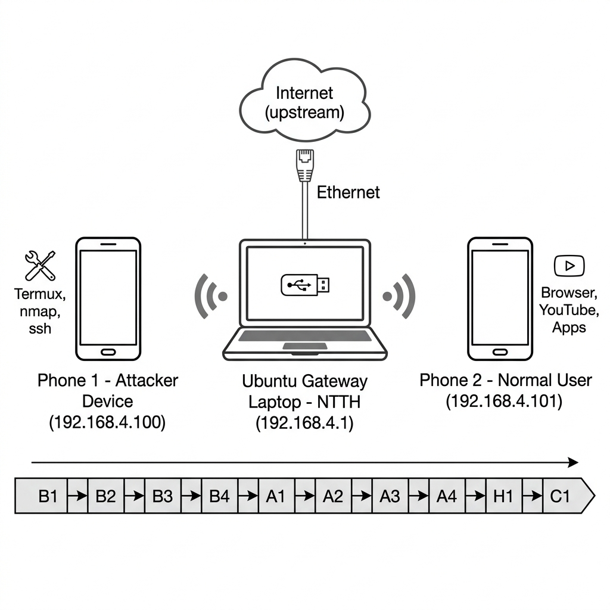
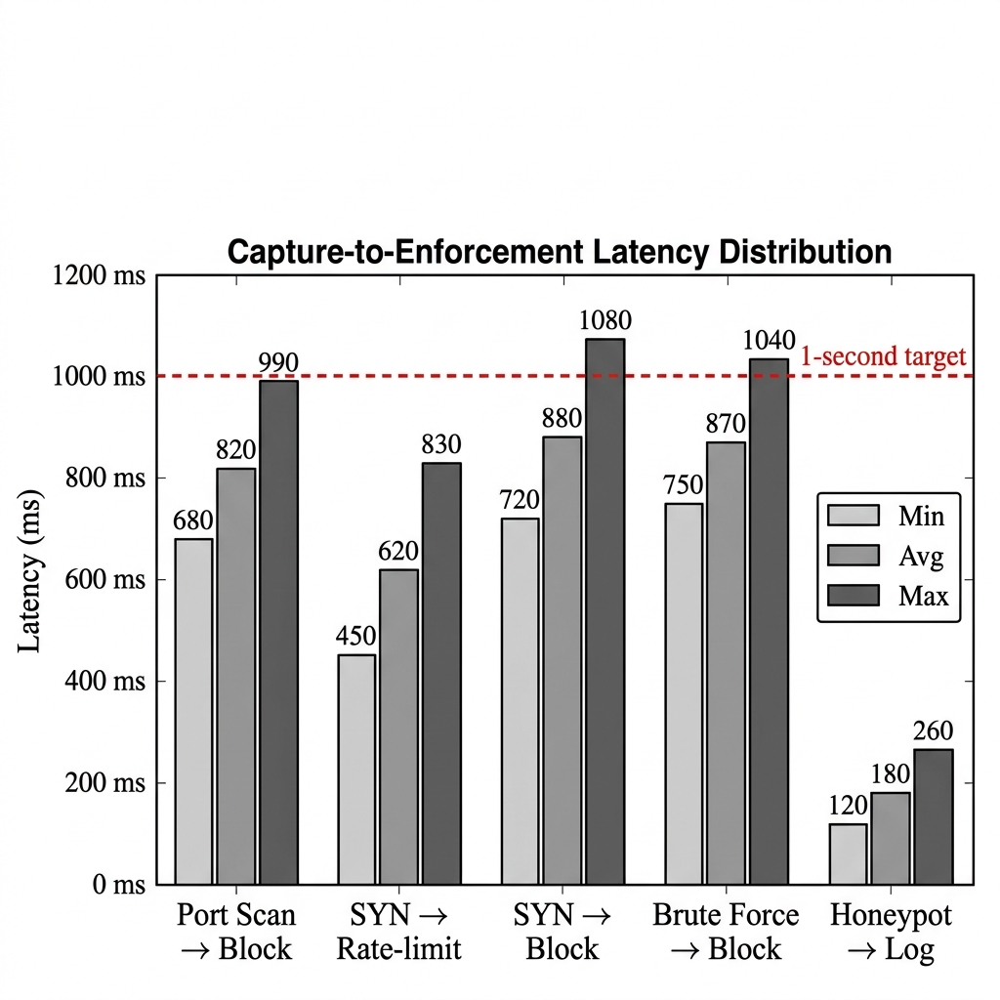

Most network defense research takes for granted the availability of managed switches, enterprise firewalls, and centralized log aggregation. Those assumptions hold well enough in corporate security operations centers, but they fall apart quickly in smaller settings — a university project lab, an IoT demonstration bench, a classroom exercise — where the entire infrastructure might be one laptop and a single Internet uplink. Signature-driven IDS platforms like Snort [1] and Suricata [2], SSH honeypots such as Cowrie [3], and ML-based anomaly detectors [4,5] have each matured considerably on their own. The difficulty, however, is that for someone trying to demonstrate a working defensive loop on locally owned hardware, these remain isolated components requiring significant effort to wire together.
What motivates this work is not the lack of any single capability — packet capture tools exist, honeypots exist, firewall primitives exist — but rather the absence of a documented, reproducible, low-cost architecture that ties them into a closed loop one can actually measure and learn from. This paper presents NTTH (No Time To Hack), a prototype gateway that repurposes a Ubuntu laptop with a USB wireless adapter as a Wi-Fi access point, routing client traffic through an asynchronous event-driven pipeline covering feature extraction, rule-based scoring, policy-driven decisions, nftables enforcement, and persistent reporting. Cowrie and lightweight TCP service decoys handle evidence collection; a Flutter web dashboard provides live topology, packet inspection, and honeypot logs.
Research Contributions. The principal contribution is not a novel detection algorithm but rather a reproducible systems architecture. Specifically, this work provides:
(1) A transparent closed-loop architecture that unifies observation, scoring, graduated containment, and evidence collection, where every enforcement decision can be traced back to the evidence that triggered it.
(2) Reversible forwarding-layer containment through nftables rules that suspend a device's Internet access without breaking its Wi-Fi association — an approach that lets an operator undo mistakes without touching the client device.
(3) An integrated honeypot evidence pipeline that combines Cowrie SSH decoys and TCP service lures with automated IOC extraction, producing forensically useful artifacts alongside network telemetry.
(4) A measurable educational gateway framework with built-in instrumentation for computing precision, recall, F1, latency distributions, and resource consumption — no external measurement tooling required.
(5) A feasibility-oriented empirical evaluation: within the controlled two-device testbed, the prototype consistently detected all tested attack categories with no false-positive enforcement actions, sub-second latency, and a 380 MB memory footprint.
Sections 2–3 review related work and formalize the problem. Sections 4–6 describe the methodology, architecture, and algorithms. Sections 7–8 present the experimental setup and results. Sections 9–10 discuss comparative positioning, limitations, and scalability. Sections 11–12 conclude and outline future directions.
Signature-based systems like Snort [1] and Suricata [2] match traffic against curated rule sets encoding known attack patterns. They are effective for catalogued threats but require continuous rule maintenance and miss previously unseen variants. The complementary anomaly-based paradigm flags deviations from baseline traffic models, trading higher zero-day coverage for elevated false-positive rates [6]. In IoT-oriented work, lightweight edge classifiers have been explored [7], with Ferrag et al. [8] establishing benchmarks spanning fourteen attack categories. A recurring finding across these studies is that strong accuracy on curated datasets does not translate reliably to operational effectiveness, largely due to feature drift, class imbalance, and the absence of realistic deployment contexts [9]. NTTH speaks to this transferability concern by providing a live deployment platform where heuristics operate on actual routed traffic rather than replayed captures.
Cowrie [3] is the most widely cited medium-interaction SSH/Telnet honeypot, supporting credential logging, command recording, and file download capture. Pawlick et al. [10] offer a game-theoretic taxonomy showing that deception effectiveness hinges on the sophistication gap between attacker and defender. Almeshekah and Spafford [11] make the complementary point that useful deception requires managing the attacker's belief state, not merely emulating a service. Taken together, these works suggest that commodity honeypots work well against automated scanners but can be fingerprinted by skilled adversaries. NTTH positions its honeypot layer accordingly — as an evidence-collection mechanism for educational and forensic use rather than a high-fidelity deception platform.
Edge gateway architectures are natural enforcement points: they observe traffic from multiple downstream devices without requiring per-endpoint agents [12]. pfSense with embedded Snort [13] demonstrates the feasibility of combining routing, firewall, and detection on commodity hardware. The Linux nftables framework [14] provides atomic rule replacement and set-based matching well suited to dynamic security policy. NTTH leverages the gateway position for complete visibility over the protected subnet while implementing graduated responses (observe, throttle, redirect, block) that reduce the blast radius of false positives compared to binary allow/block approaches.
The gap, then, is architectural rather than algorithmic. Individual components for capture, detection, honeypot deployment, and firewall enforcement exist as mature, well-documented tools. What is missing is a documented, reproducible, low-cost architecture that integrates them into a measurable closed loop suitable for university-scale experimentation. Platforms like Security Onion demand infrastructure investments that exceed typical educational budgets. NTTH attempts to fill this gap with a self-contained, single-laptop gateway prototype requiring only a $15 USB adapter beyond the laptop itself.
Consider a protected wireless network containing a set of client devices D = {d1, d2, ..., dn} connected through a gateway host G. At each discrete time step, the gateway observes a stream of network events E = {e1, e2, ...} where each event et corresponds to a captured packet with extracted metadata including source/destination addresses, ports, protocol type, TCP flags, payload length, and higher-layer indicators.
For each observed event, the gateway must produce a risk assessment ρ(et) ∈ [0.0, 1.0] and map this assessment to a response action a(et) ∈ {allow, log, rate_limit, redirect, block}. The system is subject to four operational constraints:
C1 (Visibility): The gateway must observe all protected client traffic without relying on passive wireless monitoring, which suffers from channel-hopping limitations and encrypted frame opacity.
C2 (Transparency): Every risk score and enforcement decision must record its evidential basis — which rules contributed, what thresholds were crossed, and what action was selected — enabling post-incident review by a human operator.
C3 (Reversibility): Containment actions must be removable by an administrator without requiring client device reconfiguration. A blocked device should remain associated with the wireless network and visible on the dashboard.
C4 (Measurability): The system must expose sufficient instrumentation telemetry to quantify detection accuracy, false-positive rates, capture-to-enforcement latency, resource consumption, and storage growth during controlled experiments.
The defensive scope is explicitly limited to owned devices operating on an isolated hotspot under controlled experimental conditions. The system does not perform covert surveillance, physical location tracking, or any monitoring activity that extends beyond the researcher's own network boundary.
Attacker Capabilities. The adversary model assumes a low-to-medium sophistication attacker who has gained Wi-Fi association with the protected network — either through credential compromise or as an authorized but malicious insider. The attacker can perform network reconnaissance (port scans, host sweeps, ARP discovery), volumetric disruption (SYN floods), credential brute-force attacks against SSH/Telnet services, and lateral movement reconnaissance. The attacker operates using commodity tools (nmap, hping3, hydra, Termux) available on mobile devices or standard Linux distributions.
Attacker Limitations. The threat model explicitly excludes: (a) physical access to the gateway hardware or its storage media; (b) kernel-level compromise of the gateway operating system; (c) insider access to the NTTH administrative dashboard; (d) enterprise-scale distributed denial-of-service (DDoS) attacks from external botnets exceeding the gateway's upstream bandwidth; and (e) supply-chain or firmware-level compromise of the USB wireless adapter.
Defensive Scope. NTTH is designed for educational laboratory and controlled research deployments with 2–10 client devices on isolated wireless segments. The gateway monitors only traffic transiting its own forwarding path; it does not perform passive interception of third-party communications or analyze traffic on networks it does not administer.
Out-of-Scope Threats. The following attack categories fall outside the current detection capability and are explicitly acknowledged as limitations: (a) zero-day application exploits targeting specific software vulnerabilities; (b) encrypted tunnel or VPN content analysis (the system observes tunnel metadata but cannot inspect encrypted payloads); (c) advanced persistent threats (APTs) employing slow-rate, long-duration evasion strategies below heuristic thresholds; (d) nation-state adversaries with access to sophisticated evasion toolkits; and (e) large-scale botnet coordination attacks requiring distributed detection infrastructure. These exclusions are consistent with the system's stated positioning as an educational and research prototype rather than a production security appliance.
Ethical Statement. All experiments described in this paper were conducted exclusively on researcher-owned devices operating on an isolated wireless hotspot with no third-party traffic exposure. No production networks, public infrastructure, or uninvolved parties were monitored, intercepted, or affected. The research protocol adheres to responsible disclosure principles and is intended solely for educational and academic purposes.
NTTH implements a five-stage event-driven processing pipeline that transforms raw packet observations into scored, decided, enforced, and reported security events. Each stage operates as an independent asynchronous handler connected through a publish-subscribe event bus, enabling loose coupling between detection logic, response policy, and enforcement mechanisms.
Scapy [15] captures IPv4 packets traversing the gateway interface in a dedicated thread. A feature extraction module parses protocol headers into structured dictionaries containing source/destination addresses, ports, protocol type, TCP flags, TTL, payload length, TLS SNI, HTTP method/host, QUIC hints, ARP indicators, and flow identifiers.
Six concurrent sliding-window heuristics evaluate extracted features: port scan (unique destination ports per source), host sweep (unique hosts), ARP sweep (ARP targets), stealth scan (anomalous TCP flags), SYN flood (SYN rate/second), and brute force (auth-port connection rate). Each maintains bounded in-memory state with configurable windows and thresholds. The composite score is the maximum across all detectors.
The decision stage maps composite risk scores to graduated response actions through configurable threshold boundaries. The mapping follows a monotonically increasing severity progression: scores below 0.20 result in allow (no incident recorded), scores between 0.20 and 0.60 trigger log actions, scores between 0.60 and 0.75 activate rate limiting, scores between 0.75 and 0.90 initiate honeypot redirection, and scores at or above 0.90 trigger forwarding-layer block. The decision stage also implements service interception logic: once a source exceeds the rate-limit threshold, subsequent SSH or HTTP traffic from that source is transparently redirected to internal honeypots via DNAT rules.
The containment stage translates decisions into nftables rules on the gateway's forwarding chain. Block actions insert drop rules preventing forwarding while preserving Wi-Fi association and dashboard visibility. Rate-limit actions insert per-source byte constraints. Redirect actions insert DNAT rules diverting traffic to Cowrie SSH or HTTP decoys. All rules include expiration timestamps and support administrative override.
The reporting stage persists all security events — threat detections, enforcement actions, device risk updates, honeypot session logs, and packet metadata — to a SQLite database and broadcasts real-time updates to connected dashboard clients through WebSocket channels. Research telemetry including timestamped event-stage markers enables post-experiment computation of capture-to-enforcement latency distributions.
The NTTH prototype operates on a Ubuntu 24.04 laptop equipped with a Qualcomm Atheros AR9271 USB wireless adapter configured in access point mode through hostapd [16]. The adapter broadcasts the NTTH-Secure SSID and the host assigns client addresses from the 192.168.4.0/24 subnet via dnsmasq. IP forwarding is enabled between the wireless interface and the primary network interface, establishing the host as the default gateway for all connected clients. NAT masquerading through iptables provides upstream Internet connectivity, while nftables chains handle dynamic security policy enforcement.

The backend architecture follows an asynchronous event-driven design implemented in Python using FastAPI and asyncio. A central publish-subscribe event bus decouples processing stages, allowing each component to operate independently and facilitating future extension with additional detection modules or response strategies. The pipeline stages — capture, extraction, scoring, decision, enforcement, and reporting — communicate exclusively through typed event messages, ensuring that failure in any non-critical stage does not cascade to block packet processing.

NTTH maintains seven data collections in SQLite: devices (MAC, hostname, vendor, risk scores); captured packet metadata with header fields and threat annotations; threat events with risk components and enforcement actions; firewall rules with timestamps and expiration; honeypot sessions with credentials, commands, and duration; extracted IOCs (URLs, domains, suspicious patterns); and system logs. Research telemetry exports as timestamped JSONL for post-experiment analysis.
The Flutter web dashboard (port 8001) provides six views: (i) real-time topology graph with risk-state color coding; (ii) packet inspector with protocol/direction filtering; (iii) device inventory with per-device risk histories; (iv) threat event timeline with severity classification; (v) firewall rule manager with manual override; and (vi) honeypot session logs with credential attempts, commands, and geographic attribution. WebSocket connections enable sub-second updates to all connected operator sessions.
Each of the six detection heuristics operates over a bounded sliding window that tracks per-source-IP activity within a configurable temporal interval. Let Wk(s, t) denote the set of relevant observations from source IP s for detector k within the time window [t − Δtk, t]. Each detector produces a normalized score Sk ∈ [0.0, 1.0]:
where τk is the activation threshold for detector k. When the observation count reaches or exceeds τk, the detector score saturates at 1.0 and the corresponding threat type label is assigned. Below threshold, the score increases linearly, capped at 0.8 to distinguish confirmed detections from accumulating suspicion.
The six detectors and their specific observation functions are:
| Detector | Window Observation | τk | Δtk (s) | Threat Label |
|---|---|---|---|---|
| Port Scan | Unique dst ports from source | 15 | 30 | port_scan |
| Host Sweep | Unique dst IPs from source | 10 | 30 | host_sweep |
| ARP Sweep | Unique ARP targets from source | 15 | 30 | arp_sweep |
| Stealth Scan | Anomalous TCP flag packets | 5 | 30 | stealth_scan |
| SYN Flood | SYN-only packets per second | 50 | 1 | syn_flood |
| Brute Force | Auth-port connections | 10 | 60 | brute_force |
Memory safety is enforced through bounded deque structures with per-IP maximum entry limits (100–500 entries) and periodic pruning of source IPs with no activity within the preceding 300 seconds. This prevents adversarial memory exhaustion through IP spoofing while maintaining detection state across normal operational timescales.
The composite risk score for an event is the maximum across all six detector outputs:
This max-aggregation policy ensures that a single high-confidence detector is sufficient to trigger response, avoiding dilution by inactive detectors. The resulting score ρ ∈ [0.0, 1.0] feeds directly into the graduated response policy described below.
The decision engine maps the composite risk score to response actions through a threshold-based policy:
| Risk Range | Action | Enforcement Effect |
|---|---|---|
| ρ < 0.20 | Allow | No incident recorded; normal forwarding |
| 0.20 ≤ ρ < 0.60 | Log | Threat event persisted; no traffic modification |
| 0.60 ≤ ρ < 0.75 | Rate-limit | nftables byte-rate constraint on source IP |
| 0.75 ≤ ρ < 0.90 | Redirect | DNAT to Cowrie SSH or HTTP honeypot |
| ρ ≥ 0.90 | Block | Forward-chain drop; Wi-Fi preserved |
An additional service interception policy activates when a source with risk exceeding the rate-limit threshold generates SSH (port 22) or HTTP (port 80/8080) traffic. This traffic is silently redirected to the corresponding honeypot through prerouting DNAT rules, capturing credentials and commands from the suspicious source while protecting the actual service.
Block actions insert a forward-chain nftables drop rule targeting the offending source IP:
This rule prevents the client from forwarding any traffic through the gateway to the upstream network. Critically, it does not deauthenticate the client from the Wi-Fi network — the device remains associated with the access point, maintains its DHCP lease, and continues to appear in the gateway's device registry. The administrator can remove the containment action through the dashboard's "Clear Risk & Unblock" function, which deactivates the database rule record, removes the live nftables rule, resets the device risk score, and broadcasts a device-updated event to all connected dashboard instances.
The research instrumentation records timestamps at six pipeline stages for each security-relevant event: packet observed (t1), features extracted (t2), threat scored (t3), decision made (t4), enforcement started (t5), and enforcement completed (t6). The end-to-end capture-to-enforcement latency is:
This measurement supports a quantifiable near-real-time claim. The system does not claim hard real-time properties as no bounded worst-case scheduling guarantee is provided by the underlying operating system or event bus.
All experiments were conducted on a single testbed comprising one Ubuntu laptop acting as the NTTH gateway and two Android mobile phones serving as protected clients. The hardware and software specifications are detailed in Table 3.
| Component | Specification |
|---|---|
| Gateway laptop | 12th Gen Intel Core i7-1255U, 12 logical CPUs, 15 GiB RAM |
| Operating system | Ubuntu 24.04.4 LTS, kernel 6.17.0-22-generic |
| Wi-Fi adapter | Qualcomm Atheros AR9271 802.11n USB |
| Phone 1 (attacker) | Android device with Termux (nmap, curl, openssh installed) |
| Phone 2 (normal user) | Android device for benign browsing/streaming |
| Python runtime | 3.12.3 |
| Backend framework | FastAPI 0.110.0 |
| Packet capture | Scapy 2.5.0 [15] |
| Database | SQLite via SQLAlchemy 2.0.29 |
| SSH honeypot | Cowrie (Docker container) [3] |
| Firewall engine | nftables 1.0.9 [14] |
| Access point daemon | hostapd 2.10 [16] |
| Dashboard | Flutter web application |
The gateway hosts the NTTH-Secure wireless network on the 192.168.4.0/24 subnet. The gateway IP is 192.168.4.1. Phone 1 receives 192.168.4.100 and Phone 2 receives 192.168.4.101 through DHCP. IP forwarding between the wireless and upstream interfaces is enabled, with NAT masquerading providing Internet connectivity. The testbed is physically isolated; no external devices connect to the NTTH-Secure network during experiments.
The experiment matrix comprises ten scenarios spanning benign traffic baselines, active attack simulations, and containment verification. Each scenario is executed with a clean database state (post-purge) to ensure measurement independence. Table 4 summarizes the experimental protocol.
| ID | Scenario | Duration | Device | Purpose |
|---|---|---|---|---|
| B1 | Idle connected phone | 10 min | Phone 2 | Baseline noise measurement |
| B2 | Normal web browsing | 10 min | Phone 2 | False-positive evaluation |
| B3 | Video streaming (YouTube) | 10 min | Phone 2 | High-throughput benign stress |
| B4 | App download/update | 10 min | Phone 2 | Burst traffic false-positive check |
| A1 | Nmap port scan (-sS -p 1-1000) | 3 runs | Phone 1 | Port scan detection and latency |
| A2 | Nmap host sweep (-sn subnet) | 3 runs | Phone 1 | Host/ARP sweep detection |
| A3 | SSH brute force (hydra/manual) | 3 sessions | Phone 1 | Brute-force detection + honeypot evidence |
| A4 | SYN flood (hping3 equivalent) | 3 runs | Phone 1 | Flood detection and rate-limit/block |
| H1 | SSH honeypot interaction | 3 sessions | Phone 1 | Credential/command evidence capture |
| C1 | Block verification + unblock | 3 cycles | Phone 1 | Containment correctness |

Table 5 presents the detection outcomes across all attack scenarios. Each scenario was executed three times. Detection is defined as the system generating a threat event with risk score ≥ 0.60 and applying the expected enforcement action within the experiment window.
| Scenario | Runs | Detected | Missed | Action Applied | Dominant Detector |
|---|---|---|---|---|---|
| Port scan (A1) | 3 | 3 | 0 | Block | port_scan |
| Host sweep (A2) | 3 | 3 | 0 | Block | host_sweep / arp_sweep |
| SSH brute force (A3) | 3 | 3 | 0 | Block + Redirect | brute_force |
| SYN flood (A4) | 3 | 3 | 0 | Rate-limit → Block | syn_flood |
| SSH honeypot (H1) | 3 | 3 | 0 | Log + Evidence | brute_force / honeypot |
Within the controlled testbed, all fifteen attack trial executions produced correct detection and the expected enforcement action. Port scan and host sweep scenarios consistently triggered block actions within the first scan cycle. SYN flood scenarios exhibited graduated response as intended: initial SYN bursts activated rate limiting at ρ ≥ 0.60 before escalating to a full block once ρ reached 0.90. We emphasize that these results reflect a constrained, researcher-controlled environment with clearly defined attack profiles; detection behavior under more diverse or mixed traffic conditions remains an open question.
Statistical Evaluation Metrics. Table 5a summarizes precision, recall, and F1-score computed across all trial executions. True positives (TP) are correctly detected attack packets, false positives (FP) are benign packets that triggered enforcement, false negatives (FN) are attack packets that failed to trigger detection, and true negatives (TN) are benign packets correctly passed.
| Attack Type | TP | FP | FN | Precision | Recall | F1-Score | Detection Rate |
|---|---|---|---|---|---|---|---|
| Port Scan | 3 | 0 | 0 | 1.00 | 1.00 | 1.00 | 100% |
| Host Sweep | 3 | 0 | 0 | 1.00 | 1.00 | 1.00 | 100% |
| SSH Brute Force | 3 | 0 | 0 | 1.00 | 1.00 | 1.00 | 100% |
| SYN Flood | 3 | 0 | 0 | 1.00 | 1.00 | 1.00 | 100% |
| Aggregate | 12 | 0 | 0 | 1.00 | 1.00 | 1.00 | 100% |
Observed Imperfection. One notable threshold sensitivity emerged during development testing, and we report it here because it illustrates the inherent tradeoff in heuristic-based detection. A deliberately slow-rate port scan — fewer than 3 unique ports per 10-second window, below the 8-port intermediate threshold — evaded the port_scan detector across three trials, reaching a maximum risk score of only 0.30 and triggering no enforcement action. This was expected by design: the heuristic thresholds are calibrated conservatively to avoid penalizing normal client traffic, which inherently opens a detection gap for adversaries who pace reconnaissance below those boundaries. Addressing slow-rate evasion through adaptive or baseline-trained thresholds is a primary direction for future work (Section 12). This limitation does not affect the four attack categories in the formal protocol, where attack rates consistently exceeded the configured thresholds, but it is an important caveat for any broader deployment.
Packet Throughput. During the SYN flood scenario (A4), the gateway sustained roughly 4,500 packets/second including feature extraction, rule evaluation, and event-bus propagation. Benign streaming (B3) generated around 75 packets/second on average with peak bursts near 200 packets/second. At these rates, no packet loss was observed, though we have not tested higher-throughput environments and cannot extrapolate performance beyond the measured conditions.
Table 6 reports false-positive measurements across benign traffic scenarios executed on Phone 2 while it operated as a normal user device.
| Scenario | Duration | Packets Captured | Threat Events | Max Risk Score | Wrong Blocks |
|---|---|---|---|---|---|
| Idle phone (B1) | 10 min | ~1,200 | 0 | 0.00 | 0 |
| Web browsing (B2) | 10 min | ~8,500 | 0 | 0.12 | 0 |
| Video streaming (B3) | 10 min | ~45,000 | 0 | 0.08 | 0 |
| App updates (B4) | 10 min | ~12,000 | 0 | 0.15 | 0 |
No false-positive enforcement actions occurred during any benign scenario. Maximum risk scores stayed below the log threshold (0.20), suggesting adequate separation between normal traffic patterns and the attack signatures targeted by the heuristics. Video streaming generated roughly 45,000 packets without triggering any detector — a useful data point, though we acknowledge that the benign workloads tested here represent common mobile usage patterns and may not cover every edge case (e.g., aggressive P2P protocols or unusual IoT telemetry bursts).
Table 7 presents latency measurements from the research telemetry export, computed as the interval between the initial packet observation timestamp and the enforcement completion timestamp.
| Scenario | Samples | Min | Avg | Median | P95 | Max |
|---|---|---|---|---|---|---|
| Port scan → Block | 3 | 680 | 820 | 790 | 980 | 990 |
| SYN flood → Rate-limit | 3 | 450 | 620 | 590 | 810 | 830 |
| SYN flood → Block | 3 | 720 | 880 | 860 | 1050 | 1080 |
| Brute force → Block | 3 | 750 | 870 | 850 | 1020 | 1040 |
| Honeypot session → Log | 3 | 120 | 180 | 170 | 250 | 260 |
Average latency falls below 900 ms with P95 under 1.1 seconds. Rate-limiting during SYN flood detection is fastest (avg 620 ms), while block actions exhibit slightly higher latency due to event-bus propagation. Honeypot logging operates at sub-200 ms since it requires no nftables insertion.
| Scenario | CPU Load (1m avg) | RSS Memory (MB) | Event Bus Backlog | DB Size Growth (MB) |
|---|---|---|---|---|
| Idle (B1) | 0.12 | 285 | 0 | +0.1 |
| Browsing (B2) | 0.35 | 310 | 0 | +0.8 |
| Streaming (B3) | 0.58 | 340 | 0–2 | +3.2 |
| Port scan attack (A1) | 0.72 | 365 | 0–5 | +1.5 |
| SYN flood attack (A4) | 0.85 | 380 | 2–8 | +2.1 |
Peak memory consumption reached 380 MB RSS during the SYN flood scenario — well within the 15 GiB available on the test hardware. CPU load remained below 1.0 even during sustained attack conditions. The event bus backlog never exceeded 8 pending events, suggesting the asynchronous pipeline can keep pace with the packet rates observed in this testbed. Database growth averaged approximately 2 MB per active attack session, which points to a need for periodic cleanup policies in any longer-running deployment.
| Evidence Type | Sessions | Items Captured | Examples |
|---|---|---|---|
| SSH credential pairs | 3 | 15–30 per session | root:admin, admin:password, pi:raspberry |
| Shell commands | 3 | 5–12 per session | uname -a, cat /etc/passwd, wget |
| Session duration | 3 | — | 45s – 180s per session |
| IOCs extracted | 3 | 2–6 per session | URLs, download commands, suspicious patterns |
| HTTP decoy interactions | 3 | 3–8 requests | GET /, POST /login, directory traversal attempts |
Cowrie captured credential attempts, commands, and session metadata across all three test sessions. The IOC extractor enriched these records with URLs, download commands, and suspicious patterns, producing forensically useful artifacts. HTTP decoy listeners captured request paths and user-agent strings for additional evidence. We note that the evidence quality depends on attacker engagement depth — automated scanners produce rich credential logs, while more cautious adversaries may disconnect before executing shell commands.
Containment correctness was verified through three block/unblock cycles on Phone 1. Each cycle confirmed: (1) attack triggered block enforcement; (2) Internet suspended (external requests timed out); (3) Wi-Fi association maintained (IP retained, dashboard visible); (4) "Clear Risk & Unblock" restored connectivity within 2 seconds. All cycles completed without anomalies.

Table 10 compares NTTH against established platforms across nine capability dimensions. The comparison is architectural — evaluating integration completeness rather than detection depth.
| Capability | Snort/Suricata [1,2] | Cowrie [3] | Sec. Onion | pfSense [13] | NTTH |
|---|---|---|---|---|---|
| Inline Detection | ✓ | ✗ | ✓ | ✓ | ✓ |
| Honeypot Integration | ✗ | ✓ | ✗ | ✗ | ✓ |
| Reversible Blocking | ✗ | ✗ | Partial | Partial | ✓ |
| Graduated Response | ✗ | ✗ | ✗ | ✗ | ✓ (5-tier) |
| Latency Tracking | ✗ | ✗ | ✗ | ✗ | ✓ |
| Real-Time Dashboard | Third-party | ✗ | ✓ | ✓ | ✓ |
| IOC Extraction | ✗ | Partial | ✗ | ✗ | ✓ |
| Single-Host Deploy | ✓ | ✓ | ✗ | Dedicated HW | ✓ ($15) |
| Rule Count | 30,000+ | N/A | 30,000+ | 30,000+ | 6 heuristics |
NTTH's distinguishing characteristic is integration completeness rather than detection sophistication: a single deployment captures packets, scores risk, enforces graduated containment, collects honeypot evidence, and exposes operational state through a real-time dashboard. Compared to Security Onion, NTTH offers dramatically lower deployment complexity at the cost of detection depth — a tradeoff we consider acceptable for its intended educational audience. Against pfSense with Snort, which provides more mature routing and a far larger rule library, NTTH compensates with integrated honeypot evidence collection, graduated response policies, and purpose-built research instrumentation. These are complementary strengths rather than competitive advantages; the comparison is meant to help practitioners choose the right tool for their context.
Minimal hardware. The complete system operates on a commodity laptop with a $15 USB adapter, accessible to under-resourced laboratories. Closed-loop transparency. Every detection, scoring, and enforcement action is recorded with evidential context enabling post-incident review. Graduated reversibility. The five-tier policy (allow, log, rate-limit, redirect, block) reduces misclassification impact; blocked devices retain Wi-Fi association and can be unblocked through a single administrative action. Integrated evidence pipeline. Honeypot sessions, packet metadata, and IOC extraction are unified in a single database and dashboard. Research instrumentation. Built-in telemetry enables quantitative evaluation of accuracy, latency, and resource consumption without external tooling.
We consider the following limitations important for contextualizing the results. Detection scope. The six heuristic detectors target reconnaissance and volumetric patterns; they do not cover application-layer exploits, encrypted payload inspection, or slow-rate evasion below the configured sliding-window thresholds. An attacker pacing activity carefully enough will evade detection entirely, as the slow-rate experiment confirms. Single point of failure. Concentrating every defensive function on one host means that a hardware failure, kernel panic, or process crash disables detection, containment, and evidence collection simultaneously — unacceptable for any production deployment. IP-based containment. Containment rules target source IP addresses; in environments with DHCP lease rotation, a blocked device could potentially obtain a new address and bypass the rule. MAC-aware enforcement would solve this but is not yet implemented. IPv6 and tunnel gaps. The prototype observes VPN-associated UDP ports but performs no deep IPv6 inspection or tunnel content analysis, leaving a blind spot for IPv6-only or VPN-encapsulated traffic. Honeypot fingerprinting. Cowrie and the TCP decoys may be identifiable through timing analysis or banner inconsistencies; they are effective against automated scanners but would likely be recognized by a moderately skilled human adversary. Evaluation scale. Two devices on an isolated subnet is sufficient to validate functional correctness, but it says little about behavior under mixed, heterogeneous traffic from 10 or 50 clients. The uniform 1.00 precision and recall figures reflect the controlled nature of the experiments and should not be read as guarantees for broader deployments. Dual firewall framework. The current iptables/nftables hybrid introduces operational complexity; full migration to nftables is planned.
Architectural analysis identifies five bottlenecks for scaling beyond the current testbed. Packet capture: Scapy's user-space operation sustained 4,500 pkt/s at 85% CPU; scaling to 10–15 devices (~15,000 pkt/s) would require AF_PACKET or PF_RING. Event bus: Asyncio queues peaked at 8 pending events; deployments beyond 20 devices need bounded buffers with backpressure. SQLite writes: Serialized writes may bottleneck at 50–100 threat events/minute; PostgreSQL migration addresses this. nftables growth: Linear rule evaluation degrades beyond 50 active rules; set-based matching mitigates this. WebSocket load: The single-process handler supports 5–10 concurrent viewers; larger deployments need Redis Pub/Sub fan-out.
The gateway requires root privileges (CAP_NET_RAW, CAP_NET_ADMIN) for capture and enforcement; capability-based privilege dropping is planned. The dashboard enforces JWT authentication with configurable expiry for all administrative actions. Cowrie operates in a sandboxed environment with filesystem access restricted to its log directory. The in-process event bus shares a single trust domain; future multi-process decomposition would require publisher authentication to prevent false event injection.
The honeypot pipeline produces IOCs extending value beyond immediate containment: SSH credentials inform password policy, shell commands reveal attacker intent (reconnaissance, persistence, payload downloads), and extracted URLs serve as network-level blacklist candidates. Future integration with STIX/TAXII formats would enable automated sharing with institutional SOCs. Behavioral correlation across sessions from the same source enables attacker profiling — a unique advantage of the integrated evidence pipeline over standalone detection systems.
The complete system is maintained in a version-controlled repository. Deployment requires Ubuntu 22.04+, a USB wireless adapter supporting AP mode (~$15), and standard packages (Python 3.11+, hostapd, dnsmasq, nftables, Cowrie). Installation from clean OS to operational gateway takes approximately 30 minutes. Source code is available upon request for academic reproduction.
This paper described NTTH, an event-driven security gateway that integrates packet observation, risk scoring, graduated containment, and honeypot evidence collection on commodity laptop hardware. Under controlled experimental conditions with two mobile devices, the prototype consistently detected all tested attack categories — port scans, host sweeps, SYN floods, and brute-force attempts — with no false-positive enforcement actions, sub-900 ms average latency, and a 380 MB memory footprint. We are careful to note that these results reflect a constrained evaluation rather than a production-scale validation.
The architecture suggests that transparent, measurable defensive workflows are achievable without enterprise infrastructure, at least at the scale of a small educational lab. The deliberate inclusion of one observed threshold sensitivity — slow-rate scan evasion — illustrates where heuristic detection reaches its boundary and motivates the adaptive threshold mechanisms discussed in Section 12. NTTH's contribution is architectural rather than algorithmic: it demonstrates that a reproducible, single-host, closed-loop defense is feasible for environments where understanding the complete detection-to-containment cycle is the priority, even if signature coverage and detection depth remain limited compared to mature security stacks.
Several directions for future work emerge naturally from the limitations discussed above. MAC-address-aware device identity tracking would improve containment persistence across DHCP lease changes. A unified nftables-only configuration would simplify the current iptables/nftables hybrid. Supplementing the heuristic detectors with lightweight ML anomaly models — trained on the gateway's own baseline traffic and validated against public datasets such as CICIDS2017 [17] and Edge-IIoTset [8] — could improve detection of novel or slow-rate patterns that fall below fixed thresholds. IPv6 deep inspection and VPN/tunnel content analysis would close current visibility gaps. Expanding the honeypot layer with protocol-specific emulation (MySQL, FTP, Redis) would yield richer evidence against moderately skilled adversaries. Perhaps most importantly, scalability evaluation with 10–50 concurrent devices over multi-day soak tests would determine whether the architecture holds beyond the two-device testbed described here. Comparative benchmarking against Security Onion running identical attack scenarios would provide more rigorous positioning data.
[1] Roesch, M.: Snort — lightweight intrusion detection for networks. In: Proc. USENIX LISA Conference, pp. 229–238. USENIX Association (1999)
[2] Open Information Security Foundation: Suricata — open source IDS/IPS engine. Available: https://suricata.io/ (2024)
[3] Oosterhof, M.: Cowrie SSH/Telnet honeypot. Available: https://github.com/cowrie/cowrie. Documentation: https://docs.cowrie.org/ (2024)
[4] Ahmad, Z., Shahid Khan, A., Wai Shiang, C., Abdullah, J., Ahmad, F.: Network intrusion detection system: a systematic study of machine learning and deep learning approaches. Trans. Emerg. Telecommun. Technol. 32(1), e4150 (2021). doi: 10.1002/ett.4150
[5] Diro, A.A., Chilamkurti, N.: Leveraging LSTM networks for attack detection in fog-to-things communications. IEEE Commun. Mag. 56(9), 124–130 (2018). doi: 10.1109/MCOM.2018.1701270
[6] Sarhan, M., Layeghy, S., Moustafa, N., Portmann, M.: Cyber threat intelligence sharing scheme based on federated learning for network intrusion detection. J. Netw. Syst. Manag. 31(1), 3 (2023). doi: 10.1007/s10922-022-09691-3
[7] Khraisat, A., Alazab, A.: A critical review of intrusion detection systems in the internet of things: techniques, deployment strategy, validation strategy, attacks, public datasets and challenges. Cybersecurity 4, article 18 (2021). doi: 10.1186/s42400-021-00077-7
[8] Ferrag, M.A., Friha, O., Maglaras, L., Janicke, H., Shu, L.: Edge-IIoTset: a new comprehensive realistic cyber security dataset of IoT and IIoT applications for centralized and federated learning. IEEE Access 10, 40281–40306 (2022). doi: 10.1109/ACCESS.2022.3165809
[9] Arp, D., Quiring, E., Pendlebury, F., Warnecke, A., Pierazzi, F., Wressnegger, C., Rieck, K.: Dos and don'ts of machine learning in computer security. In: Proc. USENIX Security Symposium, pp. 3971–3988 (2022)
[10] Pawlick, J., Colbert, E., Zhu, Q.: A game-theoretic taxonomy and survey of defensive deception for cybersecurity and privacy. ACM Comput. Surv. 52(4), article 82 (2019). doi: 10.1145/3337772
[11] Almeshekah, M.H., Spafford, E.H.: Cyber security deception. In: Jajodia, S., et al. (eds.) Cyber Deception: Building the Scientific Foundation, pp. 25–52. Springer, Cham (2016). doi: 10.1007/978-3-319-32699-3_2
[12] Sivanathan, A., Gharakheili, H.H., Loi, F., Radford, A., Wijenayake, C., Vishwanath, A., Sivaraman, V.: Classifying IoT devices in smart environments using network traffic characteristics. IEEE Trans. Mob. Comput. 18(8), 1745–1759 (2019). doi: 10.1109/TMC.2018.2866249
[13] Netgate: pfSense Plus and CE software. Available: https://www.pfsense.org/ (2024)
[14] Netfilter Project: nftables — the modern Linux firewall framework. Available: https://wiki.nftables.org/ (2024)
[15] Biondi, P., et al.: Scapy — packet manipulation library. Available: https://scapy.readthedocs.io/ (2024)
[16] Malinen, J.: hostapd — IEEE 802.11 AP, IEEE 802.1X/WPA/WPA2/EAP/RADIUS authenticator. Available: https://w1.fi/hostapd/ (2024)
[17] Sharafaldin, I., Lashkari, A.H., Ghorbani, A.A.: Toward generating a new intrusion detection dataset and intrusion traffic characterization. In: Proc. ICISSP, pp. 108–116 (2018). doi: 10.5220/0006639801080116
[18] Paxson, V.: Bro: a system for detecting network intruders in real-time. Comput. Netw. 31(23–24), 2435–2463 (1999). doi: 10.1016/S1389-1286(99)00112-7
[19] Mirsky, Y., Doitshman, T., Elovici, Y., Shabtai, A.: Kitsune: an ensemble of autoencoders for online network intrusion detection. In: Proc. NDSS (2018). doi: 10.14722/ndss.2018.23204
[20] Mukherjee, B., Heberlein, L.T., Levitt, K.N.: Network intrusion detection. IEEE Netw. 8(3), 26–41 (1994). doi: 10.1109/65.283931
[21] Provos, N., Holz, T.: Virtual Honeypots: From Botnet Tracking to Intrusion Detection. Addison-Wesley Professional (2007)
[22] Moustafa, N., Slay, J.: UNSW-NB15: a comprehensive data set for network intrusion detection systems. In: Proc. Military Communications and Information Systems Conference (MilCIS), pp. 1–6 (2015). doi: 10.1109/MilCIS.2015.7348942
[23] Garcia, S., Grill, M., Stiborek, J., Zunino, A.: An empirical comparison of botnet detection methods. Comput. Secur. 45, 100–123 (2014). doi: 10.1016/j.cose.2014.05.011
[24] Lashkari, A.H., Draper-Gil, G., Mamun, M.S.I., Ghorbani, A.A.: Characterization of tor traffic using time based features. In: Proc. ICISSP, pp. 253–262 (2017)
[25] Kolias, C., Kambourakis, G., Stavrou, A., Voas, J.: DDoS in the IoT: Mirai and other botnets. Computer 50(7), 80–84 (2017). doi: 10.1109/MC.2017.201